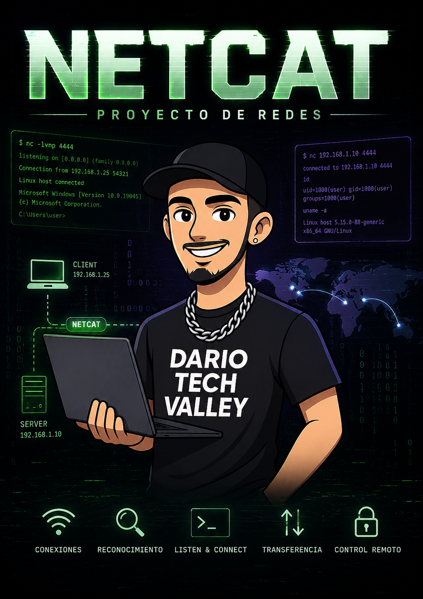
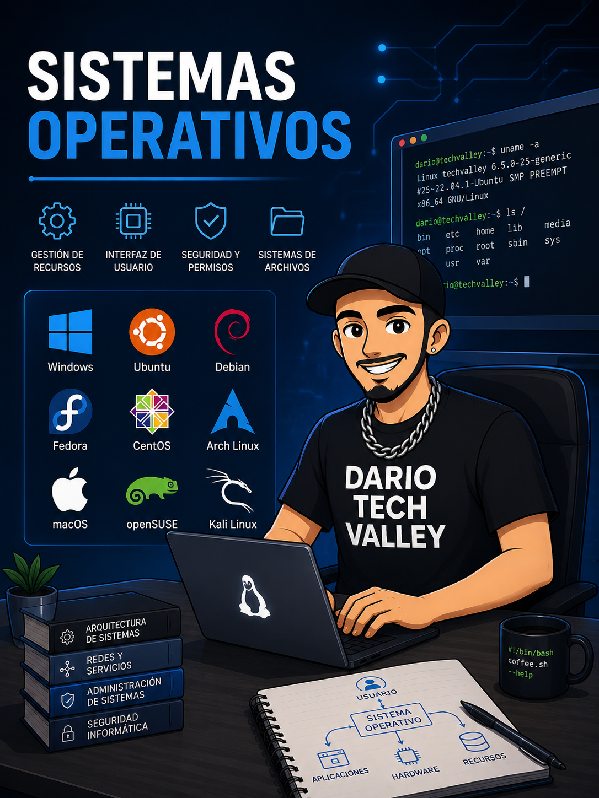
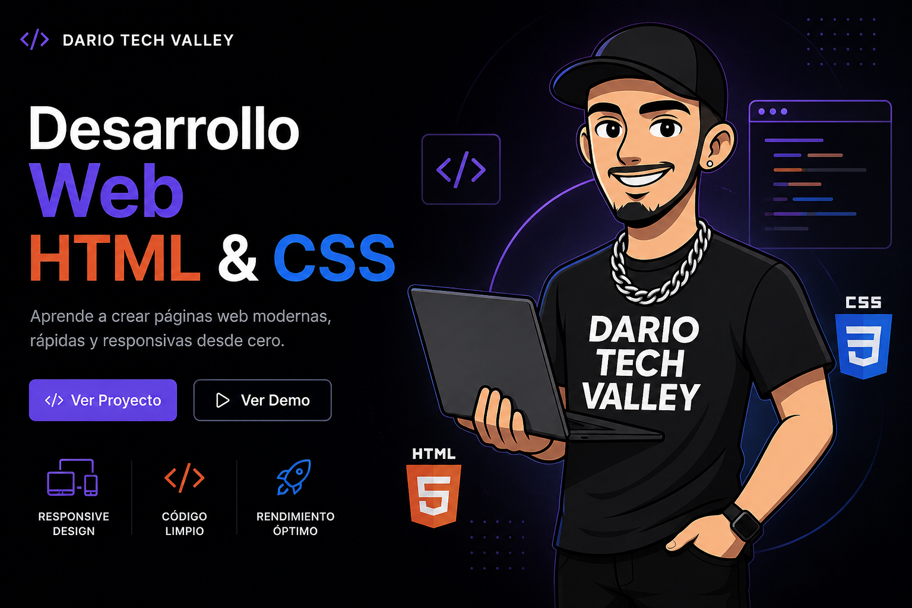

Destacado · Redes e infraestructura
Cableado estructurado
Diseño técnico de infraestructura de red corporativa con normativa, arquitectura, cableado horizontal, fibra óptica, PoE, racks, materiales y planificación.
Proyectos
Mis proyectos muestran una forma de aprender informática basada en montar escenarios, probar configuraciones, documentar procesos y explicar resultados.
El eje principal está en sistemas, redes e infraestructura. También incluyo trabajos de programación básica, web, bases de datos, comunicación y experiencias reales vinculadas a entornos técnicos.
Listado
Filtro por categorías. Los documentos se descargan directamente desde el repositorio.
Destacado · Redes e infraestructura
Diseño técnico de infraestructura de red corporativa con normativa, arquitectura, cableado horizontal, fibra óptica, PoE, racks, materiales y planificación.

Destacado · Sistemas y servicios
Entorno virtualizado con Ubuntu Server, Windows Server y Windows 10 para integrar DNS, AD DC, DHCP, enrutamiento, Apache y servicios complementarios.

Redes e infraestructura
Laboratorio de enrutamiento con routers software en Linux y Windows, rutas estáticas, Netplan, RRAS y análisis de conectividad.

Redes e infraestructura
Práctica de comunicación TCP/UDP, transferencia de archivos, pruebas de rendimiento, escaneo básico y uso de Termbin.

Sistemas y servicios
Gestión de almacenamiento, montaje persistente, usuarios, grupos y control de acceso en Linux y Windows.
Sistemas y servicios
Práctica de volúmenes RAID, tolerancia a fallos, rendimiento, capacidad y administración de discos en Windows Server.
Sistemas y servicios
Laboratorio de volúmenes lógicos, grupos de volúmenes, snapshots, redimensionamiento y gestión flexible del almacenamiento.
Sistemas y servicios
Configuración de Internet Connection Sharing para compartir conexión desde Windows hacia un cliente Linux en entorno virtualizado.

Web
Proyecto web estático como práctica de estructura HTML, estilos CSS, organización de archivos y publicación de contenido.
Programación
Práctica de representación lógica mediante diagrama de flujo.
Bases de datos
Diseño conceptual de base de datos mediante diagrama entidad-relación.
Programación
Proyecto básico en Python con interfaz gráfica, preguntas de capitales, dificultad progresiva y trabajo con datos.
Comunicación
Proyecto audiovisual publicado en YouTube. Forma parte de mi interés por comunicar ideas, construir contenido y presentar trabajos con intención.
Comunicación
Experiencia de comunicación pública vinculada a la etapa de SMR.

Caso real
Caso real de coordinación técnica en evento híbrido: plataforma UPRO, evidencias, soporte, sala de control, audio, vídeo y presentaciones.
Caso real
Diario de campo de las prácticas internacionales en Roma, con tareas de soporte, aulas, streaming, incidencias, Clonezilla, macOS, Windows y trabajo técnico real.
Criterio
Los proyectos destacados son los que mejor representan mi perfil de sistemas, redes e infraestructura. El resto de trabajos aparecen como apoyo para mostrar amplitud técnica, documentación y evolución.
Descargas
Los archivos están enlazados desde cada tarjeta. Algunos se descargan como DOCX, VSDX, PY o ZIP porque son documentos y prácticas originales.
Continuar
En documentación estarán el CV, certificados y prácticas adicionales que no necesitan aparecer como proyectos destacados.